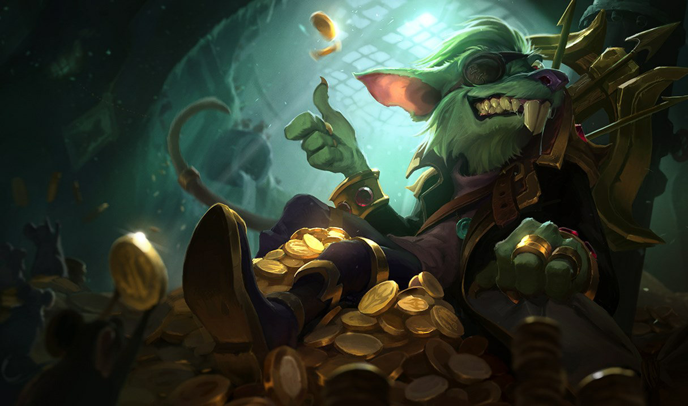
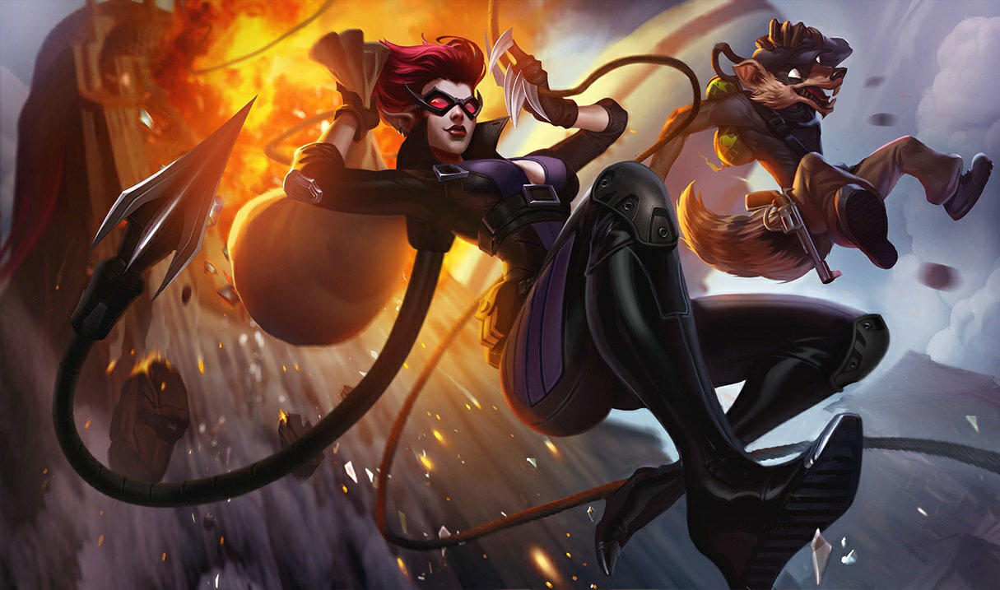

sou eu !

skills
veneno mortal
Os ataques básicos de Twitch infectam o alvo, causando Dano Verdadeiro a cada segundo.
emboscada
Twitch fica Camuflado por um curto período e recebe Velocidade de Movimento. Ao sair da Camuflagem, Twitch recebe Velocidade de Ataque por um curto período. Quando um Campeão inimigo com Veneno Mortal é abatido, o Tempo de Recarga de Emboscada é reiniciado.
tonel de veneno
Twitch joga um tonel de veneno que explode em uma área, causando Lentidão e veneno mortal aos alvos.
contaminar
Twitch causa ainda mais destruição em inimigos envenenados com uma explosão de suas pestes.
passando fogo.
Twitch desfere o poder total de sua besta, fazendo disparos de longuíssimo alcance que perfuram todos os inimigos pegos em seu trajeto.
algumas skins do rato
rei do crime
nesta skin o rato apresenta um tapa olho, invés dos seus óculos quebrados. Se destaca também as vestes elequantes, diferente do seu traje esfarrapado usual.
trombadinha
o rato não é mais o rato nessa skin, mas sim, um guaxinim. A skin mostra a representação classica do ladrao e sua mascara que cobre apenas os olhos.